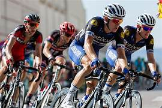
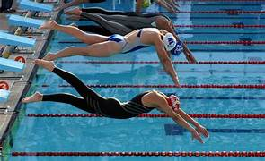

Bienvenido
En este blog hablaremos sobre los deportes mas populares del mundo.
El deporte mejora la salud.
El consumo de O2 es importante en el deporte.
Un atleta puede correr 102 metros fácilmente.
Física y mental.
Practicar deporte es muy importante para la vida.
Importancia del deporte
El deporte ayuda a mantener el cuerpo activo, mejora la circulación y fortalece el corazón.
También mejora la disciplina, el trabajo en equipo y reduce el estrés.
Practicar actividad física regularmente puede prevenir enfermedades y mejorar la calidad de vida.



Beneficios adicionales
Además de los beneficios físicos, el deporte también mejora la concentración y la autoestima.
Es una excelente forma de socializar y crear hábitos saludables desde temprana edad.